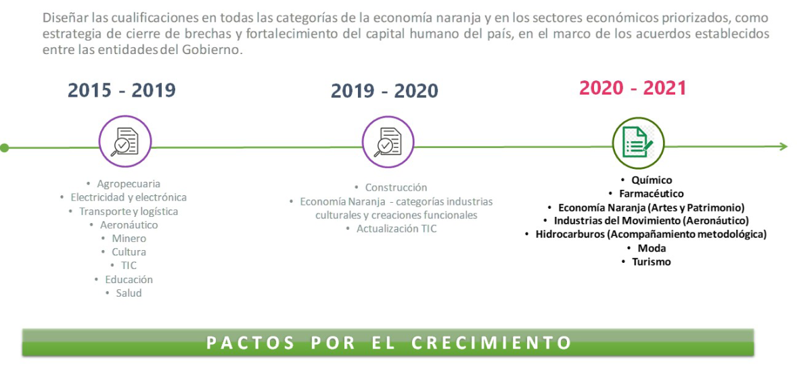

Desde el año 2010 el Ministerio de Educación Nacional (MEN) en coordinación con el Ministerio del Trabajo, la Alta Consejería Presidencial para el Sector Privado, el SENA, el Departamento Nacional de Planeación, la Función Pública, el Ministerio de Industria Comercio y Turismo, y junto con entidades del sector productivo, gubernamental y educativo han venido avanzando significativamente en el diseño, desarrollo e implementación del Marco Nacional de Cualificaciones (MNC) para Colombia, proceso que ha contado con acompañamiento técnico internacional que ha permitido recoger experiencias y buenas prácticas de países que cuentan con Sistemas de Cualificaciones.
Colombia hace parte de la tercera generación de países que se encuentran avanzando en el diseño de Marcos de Cualificaciones. En la actualidad más de 150 países del mundo avanzan en el desarrollando o actualizando sus Marcos de Cualificaciones.
En este sentido, el MEN ha vendido desarrollando acciones para dar cumplimiento a las recomendaciones nacionales e internacionales, las cuales ven en los Marcos de Cualificaciones una oportunidad para organizar y dar coherencia a la oferta educativa y formativa con altos estándares de pertinencia y calidad (Agenda de Educación 2030 – UNESCO 2016, Recomendaciones OCDE 2016, Informe Nacional de Competitividad 2017-2018, Acuerdo por lo Superior 2034, CONPES 3674/2010, CONPES 173/2014 y CONPES 3866/2016) y lo propuesto actualmente en el artículo 194 de la ley 1955 de 2019.
Desarrollar un Marco en Colombia se constituye en una oportunidad para afrontar entre otros aspectos, la desarticulación entre el sistema educativo y el mercado laboral, los problemas relacionados con la acumulación de capital humano, es decir el aprendizaje a lo largo de la vida y la ausencia de un sistema integrado de aseguramiento de la calidad.
A partir de las experiencias y recomendaciones de expertos nacionales e internacionales, el MEN propone el diseño, estructuración e implementación del MNC como un proceso de construcción gradual y colectiva, que contempla el desarrollo de ejercicios piloto en ciertos sectores económicos, y que a partir de los resultados y lecciones aprendidas se incorporen paulatinamente nuevos sectores hasta obtener una metodología sólida que permita el diseño de las cualificaciones en los diferentes sectores económicos.
La fase de fundamentación y conceptualización: Se desarrolló entre 2010 y el 2014, fue una etapa de diagnóstico y construcción conceptual basada en discusiones acera del tipo de marco más conveniente para el país conforme a las necesidades y los objetivos de política del sector educativo y laboral, producto de ello, fue definido el objetivo, alcance y tipo del Marco para Colombia, así mismo se definieron las etapas de planeación.
Fase de diseño y estructuración: La arquitectura del MNC debe permitir ordenar las cualificaciones indicando la movilidad en cuanto a la posibilidad de transferir las competencias, entre las de un mismo y distinto nivel, de forma que oriente y motive la adaptación y promoción profesional. Para ello es fue necesario definir los niveles de cualificación, como criterio de ordenación vertical de las cualificaciones.
Desde el año 2014, el MEN ha venido liderando diferentes procesos relacionados con el diseño y estructuración del MNC; producto de este trabajo hoy se cuenta con la matriz de descriptores que expresa en términos de resultados de aprendizaje lo que una persona conoce, comprende y es capaz de hacer en el entorno educativo y productivo; el modelo de cualificación y la ruta metodológica para el diseño de cualificaciones, los cuales se constituyen en la primera versión de los instrumentos metodológicos del MNC en un proceso de construcción participativa con representantes del sector académico, gubernamental y privado.
La versión actual de los instrumentos metodológicos ha surtido diferentes procesos de verificación a nivel nacional y con expertos internacionales.
Fase de validación: Consiste en llevar a la práctica los elementos metodológicos construidos en las fases de fundamentación, diseño y estructuración del MNC (alcance, matriz de descriptores, modelo de cualificación y ruta para el diseño de las cualificaciones), y se realiza a partir del desarrollo de ejercicios piloto en diferentes sectores económicos.
El primer ejercicio piloto del MNC fue el en el sector de las Tecnologías de la Información y las Comunicaciones – TIC, por ser un sector de clase Mundial, transversal a los demás sectores de la economía y por los aportes significativos a la productividad y competitividad del país; este ejercicio se adelantó en el segundo semestre de 2015, en alianza con el Centro de Investigación de las Telecomunicaciones – Cintel, la Federación Colombiana de la Industria del Software y TI - Fedesoft con el apoyo de los Ministerios del Trabajo, El Ministerio de las Tecnologías de la Información y las Comunicaciones, y Asenof. Este piloto permitió poner en práctica los instrumentos metodológicos, obteniendo 67 cualificaciones para el sector TIC las cuales hacen parte del Catálogo Nacional de Cualificaciones.
Entre 2016 y 2017 se diseñaron 47 cualificaciones en los siguientes sectores y subsectores con el siguiente alcance:
En el primer semestre del 2018 se dio continuidad al proyecto diseño de las cualificaciones en sectores priorizados, ampliando el alcance en todo el sector Agricultura, Logística y Eléctrico iniciados en el 2016, y se abordaron nuevos sectores como el de Transporte y Electrónico. Estos ejercicios se realizaron en alianza con el Centro de Investigación y Desarrollo Tecnológico del Sector Eléctrico -CIDET, la Federación Colombiana de Agentes Logísticos en Comercio Internacional -FITAC-, la Corporación Colombiana de Investigación Agropecuaria - Agrosavia, los Ministerios de Agricultura y Desarrollo Rural, Transporte, y el Departamento Nacional de Planeación – DNP.
Para el diseñar las cualificaciones en los sectores relacionados se realizó un trabajo articulado con la Subdirección de Análisis Monitoreo y Prospectiva Laboral del Ministerio del Trabajo, la Red de Observatorios Regionales del Mercado de Trabajo -RED ORMET- y actores del sector productivo y académico.
Sumado a lo anterior y como respuesta a lo establecido en el Plan Nacional de Desarrollo (PND) 2018-2022 y a los compromisos derivados de los “Pactos por el Crecimiento” entre el 2019 y 2020 se avanzó en el diseño del catálogo del sector construcción en alianza con la Cámara Colombiana de la Construcción (Camacol) , actualización del catálogo del sector de Tecnologías de la Información y la Comunicación (TIC) y diseño de las cualificaciones de la categoría de Economía Naranja de creaciones funcionales, nuevos medios y diseño de software con la Corporación Tecnológica Colsubsidio. Así mismo, el Ministerio de Educación Nacional (MEN) firmó una alianza con el Programa de las Naciones Unidas para el Desarrollo (PNUD) para diseñar los catálogos de cualificaciones de los sectores químico-farmacéutico, moda, turismo y las categorías de Economía Naranja de Industrias Culturas, Artes y Patrimonio. En resumen:

Fase de Implementación - Escenarios de transición: A partir de las experiencias internacionales, el proceso de implementar un MNC involucra tres dimensiones mutuamente relacionadas: técnica, social y política.
es la que recibe mayor atención, es ahí donde se establecen consensos técnicos y metodológicos a nivel institucional relacionados con los niveles de cualificación, los resultados del aprendizaje y los descriptores respectivos, se establecen los criterios, procesos y procedimientos para incorporar las cualificaciones al MNC, se establecen los estándares y los controles para asegurar la evaluación-certificación, los principios para la progresión, la transferencia de créditos y el aseguramiento de la calidad.
considera cambios culturales e institucionales. Implementar un MNC implica la adopción de un nuevo “lenguaje nacional” sobre cualificaciones, competencias, aprendizaje a lo largo de la vida, y demás conceptos que se incorporan en un escenario de construcción, dicho lenguaje debe ser compartido con el sector educativo, sector productivo, gobierno, la sociedad civil y los demás grupos de interés. La adopción de este lenguaje común entorno al MNC implica un camino gradual que toma tiempo para ser hablado y comprendido, conlleva un cambio cultural mientras los diseños de programas, de pedagogías y de evaluación se alinean a los criterios y principios del MNC. Introducir un MNC implica construir confianza, conciliar la lógica institucional de la educación y la formación con la lógica expresada en los criterios y principios del marco.
cobra alta importancia si partimos de la base que el MNC es un instrumento organizador, creado para bridar, dar coherencia y transparencia en la educación y la formación, implica desarrollar mecanismos efectivos de coordinación y participación, pues es necesario que las partes interesadas intervengan en todas las etapas.
La puesta en marcha eficaz del Marco Nacional de Cualificaciones se debe hacer de manera gradual y requiere que los diferentes actores del sector académico, productivo y gubernamental se articulen política y técnicamente en torno a lo que representa para el país contar con un MNC. La implementación requiere de un proceso de financiamiento adecuado, del desarrollo del MNC y estrategias focalizadas, para promover el aprendizaje permanente ampliando las oportunidades de acceso a la educación y la formación, favorecer la empleabilidad de las personas a través el reconocimiento de los aprendizajes adquiridos a lo largo de la vida, capacitación de docentes, entre otros.
Para la implementación del MNC, es necesario analizar las cualificaciones existentes, definir las nuevas e incluirlas en el Catálogo Nacional de Cualificaciones, esto implica un proceso que requiere el diseño de las mismas ajustado a un modelo de cualificación acordado y a una metodología de elaboración concertada y participativa, las nuevas cualificaciones deben responder a las necesidades sociales y económicas del país, cumplir con los criterios de calidad establecidos y con una metodología de elaboración participativa.
Las estrategias y acciones que se planteen para la implementación del MNC deberán ser diseñadas y concertadas con diferentes actores, contar con el apoyo de asesores internacionales cuyos países hayan implementado marcos de cualificaciones. Una vez desarrolladas las estrategias deben ser monitoreadas, evaluadas y ajustadas.
A partir de la experiencia internacional de los países que han consolidado un Marco de Cualificaciones, la adopción se debe dar a través de procesos normativos, es por ello el Gobierno se encuentra avanzando en la reglamentación del MNC para dar continuidad al trabajo desarrollado desde hace más de 10 años en el país, necesario para afrontar los retos de calidad y pertinencia, especialmente en la educación técnica laboral, técnica profesional y tecnológica, así como aportar a la movilidad educativa y la empleabilidad laboral.
Garantizar la adopción y del MNC a través de la reglamentación, le permitirá a Colombia avanzar hacia una efectiva implementación, y así dar respuesta a los retos de consolidar el MNC.